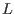

XML fragments  are added to the rules for expressions .
Further, there is a special convenience and compatibility form for setting CSS classes of tags. If a class attribute has a value that is a string literal, the literal is parsed in the usual HTML way and replaced with calls to appropriate Ur/Web combinators. Any dashes in the text are replaced with underscores to determine Ur identifiers. The same desugaring can be accessed in a normal expression context by calling the pseudo-function CLASS on a string literal.
Similar support is provided for style attributes. Normal CSS syntax may be used in string literals that are style attribute values, and the desugaring may be accessed elsewhere with the pseudo-function STYLE.